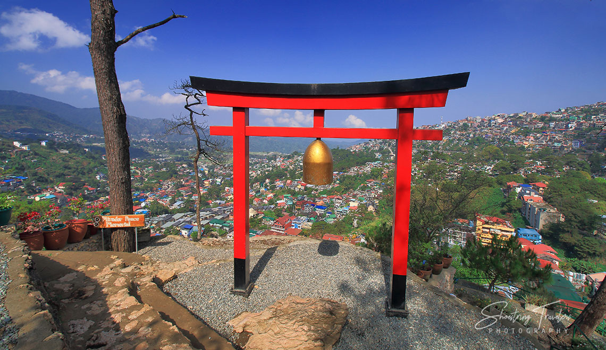

About Mirador Heritage Park
Located behind the Lourdes Grotto, the Mirador Heritage & Eco-Spirituality Park features cultural landmarks, scenic viewpoints, rock gardens, and peaceful meditation areas perfect for reflection.
Nearby Spots & Food
- 🙏 Lourdes Grotto
- 🏰 Diplomat Hotel
- 🌄 Sunset Viewing Deck
- ☕ Cafés around Mirador Hill
Map Location
This interactive map shows the exact location of Mirador Heritage Park and the surrounding hilltop area.